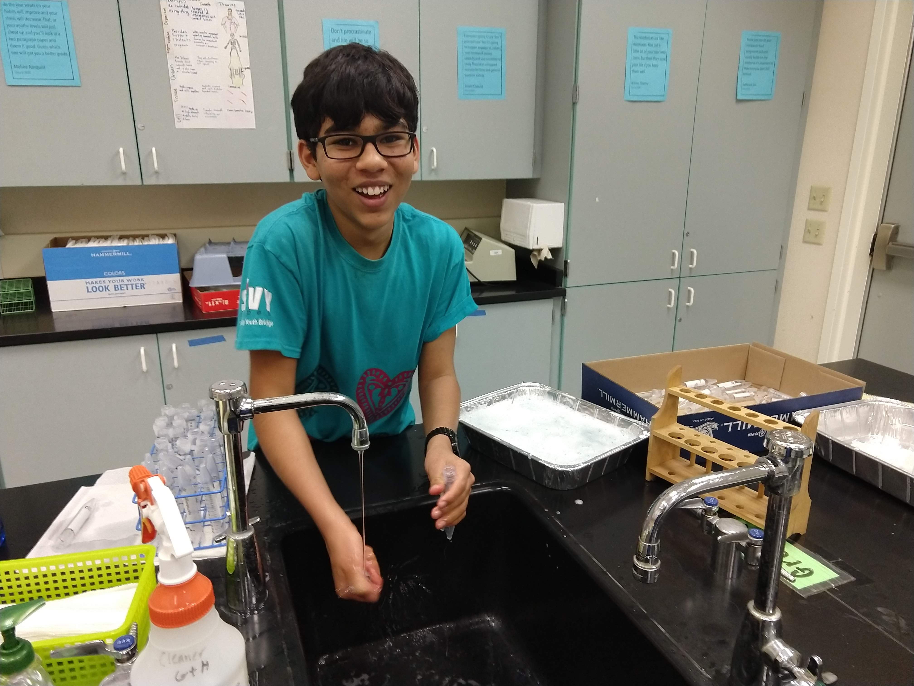
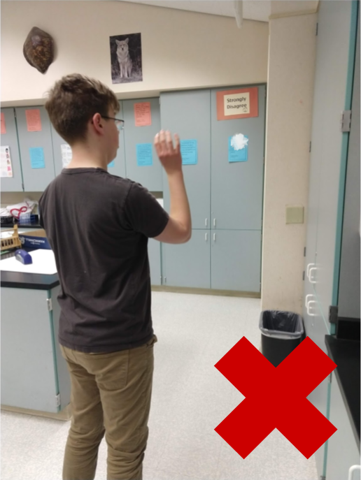

Kavi helping wash tubes. Credit S.A. 2019
Room 123 (Ms. Nguyen's classroom) is her primary place of residence as well as the location of her classes and clubs. Due to all the different people coming and going very frequently, her classroom can get quite chaotic. Thats why we're calling on YOU to come help today and ease Ms. Nguyen's stress. Below, we have detailed a few helpful ideas which you can employ to gain her favor!
Here, we have a list of ideas for things you could do to help Ms. Nguyen!
- Help Clean Materials: As pictured above, you can help Ms. Nguyen by doing simple tasks for her such as cleaning out test tubes! You can help her after school or during lunch, or TA for her and do her work!
- Not Throwing Things: According to Ms. Nguyen herself, the biggest annoyance she encounters frequently is students throwing things, especially into trash cans. She says that it's so annoying that every kid "thinks they're Lebron."
- Chewing Gum: Another thing that bother's Ms. Nguyen is people chewing gum. Despite the signs on her walls that state to not chew gum, she still witnesses it. It bothers her very much. Stop chewing gum and ease her stress today!
- Using Headphones: One more thing that really bothers Ms. Nguyen is people who use headphones. She especially dislikes this when they are using them while they are talking. So, to stay on her good side, listen to your music at another time.
